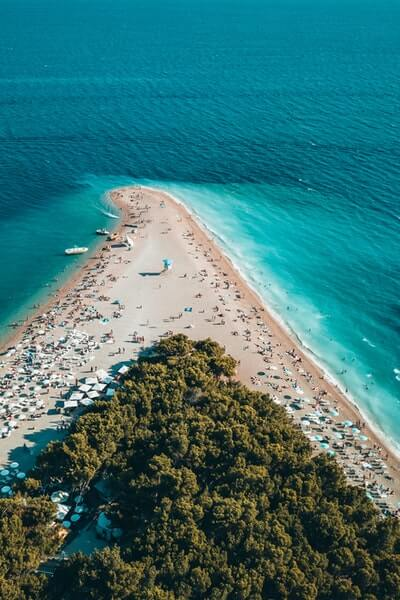
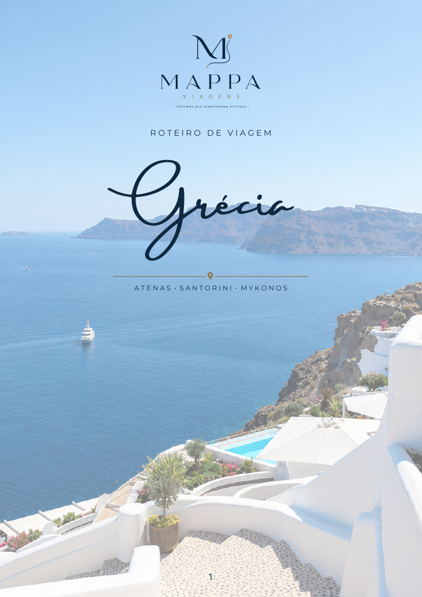

SEU PRÓXIMO CAPÍTULO COMEÇA AQUI
O mundo é extraordinário.
Sua viagem também
deveria ser.
Roteiros únicos, experiências autênticas e cada detalhe
pensado para você. Viaje além do óbvio.
⌖Um outro ritmo. Um novo horizonte.ESCOLHA VIVER O EXTRAORDINÁRIOM / VIAGENS
✧ Roteiros feitos para você♧ Assessoria em cada etapa⌖ Experiências além do comum◷ Seu tempo, bem vivido
UMA CURADORIA DE POSSIBILIDADES
Para onde seus sonhos levam?
Inspire-se. O seu próximo roteiro começa com uma escolha.
Memórias só suas.
Um novo destino para descobrir?
Nenhum roteiro corresponde a essa combinação. Experimente outros filtros.
✧ Roteiros e imagens para inspirar. Cada viagem é desenhada à sua medida.Crie algo só seu ↗

Menos roteiro pronto.Mais você.
O LUXO DE VIAJAR DO SEU JEITO
Você vive a viagem.
Nós cuidamos
dos detalhes.
Um jantar que só quem é de lá conhece. Um lugar que parece ter esperado por você. Acreditamos que as melhores viagens têm personalidade: a sua.
01Primeiro, conhecemos vocêSeus desejos, seu ritmo e o que faz seus olhos brilharem.
02Desenhamos as possibilidadesUma curadoria de lugares, estadias e experiências.
03Você só precisa viverAssessoria para transformar planos em boas memórias.

DO NOSSO ATELIÊ DE VIAGENSMUITO ALÉM DE UMA LISTA DE LUGARES
Um roteiro para levar.
Uma história para viver.
Cada descoberta tem seu lugar. Nosso roteiro reúne o dia a dia da viagem, mapas e dicas para você aproveitar o destino com leveza e confiança.
01Seu dia, bem desenhadoPasseios, contexto e dicas para cada parada.
02O caminho faz parteMapas, deslocamentos e orientações práticas.
03Os detalhes, reunidosEstrutura para hotéis, atividades e contatos úteis.
UM PRIMEIRO PASSO, SEM COMPROMISSO
Grandes viagens.
Possibilidades
ao seu alcance.
Descubra uma estimativa para sua próxima experiência. Ajuste os detalhes e encontre o seu jeito de viajar.
ⓘ Simulação ilustrativa em reais, sem consulta a tarifas ao vivo. Não representa oferta ou reserva.
SUA PRÓXIMA HISTÓRIA
Algumas viagens mudam a paisagem.
Outras mudam você.
Conte o que você imagina. Vamos dar forma à sua próxima viagem.
Uma conversa é o melhor ponto de partida.